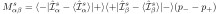
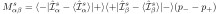

Next: Application to Neutron scattering Up: Dynamical Susceptibility and Excitations Previous: Calculation of the Correlation Contents Index
In section M.2 we showed how to calculate the dynamical susceptibility and
the correlation function of observables by the DMD method. The eigenvalues of the generalised
eigenvalue problem (275) correspond to the excitation energies of the system at some wavevector  .
The eigenvectors may be used in equation (287) to calculate for each excitation
the dynamical susceptibility.
This may be used to visualise the time or spatial dependence
of the observables (e.g. spins, angular moments,
charge density or atom positions etc.)
associated with such an excitation.
.
The eigenvectors may be used in equation (287) to calculate for each excitation
the dynamical susceptibility.
This may be used to visualise the time or spatial dependence
of the observables (e.g. spins, angular moments,
charge density or atom positions etc.)
associated with such an excitation.
In linear response theory the dynamical susceptibility is derived by applying a perturbation to the Hamiltonian (5) of the system, which is of the form
 (275)
(275)
We assume a spatial and time dependent field of frequency  and wavevector
and wavevector 
 (276)
(276)
By virtue of its definition, the dynamical susceptibility describes
the response
(change
 of expectation values
of expectation values
 )
of the system in Fourier space:
)
of the system in Fourier space:
 (277)
(277)
The corresponding oscillation of the moments
in real space and time is given by
 (278)
(278)
We eliminate the sum in this equation by choosing the components of the applied field
 . In physical terms this means that we apply an oscillating field only to
the first component of the first subsystem (atom) in each unit cell and calculate the linear response
of all components of all subsystems (atoms) to this applied field:
. In physical terms this means that we apply an oscillating field only to
the first component of the first subsystem (atom) in each unit cell and calculate the linear response
of all components of all subsystems (atoms) to this applied field:
Due to the divergence of the susceptibility at the excitation (
 ) a small
applied field
) a small
applied field  will induce a large oscillation amplitude of the moments, the amplitude
of the oscillation will depend on the relation of magnitude of the applied field and
the rate of damping of the magnetic excitation. Therefore we set the amplitude
will induce a large oscillation amplitude of the moments, the amplitude
of the oscillation will depend on the relation of magnitude of the applied field and
the rate of damping of the magnetic excitation. Therefore we set the amplitude  of the
oscillation equal to
of the
oscillation equal to
 . Substituting this into (295) and
considering the susceptibility obtained from equation (287) etc. we obtain
. Substituting this into (295) and
considering the susceptibility obtained from equation (287) etc. we obtain
This procedure fails if
 or
or
 is zero
which occurs when the mode
is zero
which occurs when the mode  of the subsystem
of the subsystem
 does not change its moment
does not change its moment
 . Therefore
it is convenient to redefine the amplitude
. Therefore
it is convenient to redefine the amplitude
 , giving
, giving
If the eigenvector components
 of this oscillation are stored for each mode
of this oscillation are stored for each mode
 , the
dynamic fluctuation of this observable may be visualised in space and time
(files for the different observables are mcdisp.qem, mcdisp.qel, mcdisp.qes, mcdisp.qee, ...).
In this way it is possible to produce figures and animated movies of spin or charge
density oscillations.
, the
dynamic fluctuation of this observable may be visualised in space and time
(files for the different observables are mcdisp.qem, mcdisp.qel, mcdisp.qes, mcdisp.qee, ...).
In this way it is possible to produce figures and animated movies of spin or charge
density oscillations.
This is done by the program display_densities
(see section17.3), or step by step, by programs
spins and javaview.
A visualisation of the magnetic moment-oscillation can for example be created by
commands spins -M T Ha Hb Hc h k l E and java javaview
model=results/spins.*.jvx Animation.LastKey=16.
Note in mcdisp.qem the eigenvector components
for different  in
in  (refering to different single ion transitions at the same ion
(refering to different single ion transitions at the same ion  )
are summed up.
)
are summed up.
I order to visualize a charge density the eigenvector  indices
indices
 refer to observables given by equation
(251) with  even, which are used
to calculate the chargedensity according to equation (252)
in appendix L.
The corresponding
oscillations
refer to observables given by equation
(251) with  even, which are used
to calculate the chargedensity according to equation (252)
in appendix L.
The corresponding
oscillations
 can be directly inserted into
(250) in order to evaluate the charge density oscillations.
This is done by program
spins with option -c,
the commands are spins -c -M T Ha Hb Hc h k l E and java javaview
model=results/spins.*.jvx Animation.LastKey=16.
Fig. 36 shows a snapshot of the result of such an
animation (on screen both chargedensities and spins will move).
can be directly inserted into
(250) in order to evaluate the charge density oscillations.
This is done by program
spins with option -c,
the commands are spins -c -M T Ha Hb Hc h k l E and java javaview
model=results/spins.*.jvx Animation.LastKey=16.
Fig. 36 shows a snapshot of the result of such an
animation (on screen both chargedensities and spins will move).
![\includegraphics[angle=0, width=0.6\textwidth]{figsrc/dispF1.eps}](img1964.svg)
|
![\includegraphics[angle=-0, width=0.6\textwidth]{figsrc/dispAF1.eps}](img1965.svg)
|
![\includegraphics[angle=-0, width=0.6\textwidth]{figsrc/animationAF1.eps}](img1966.svg)
|